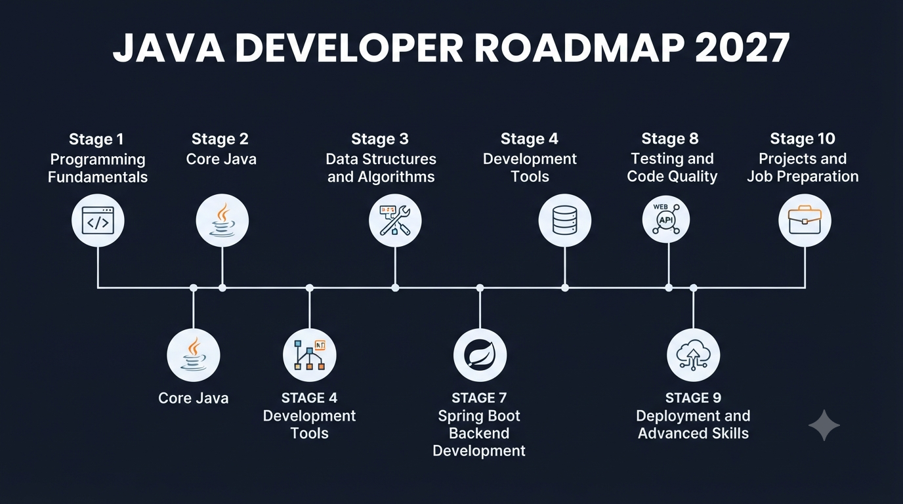
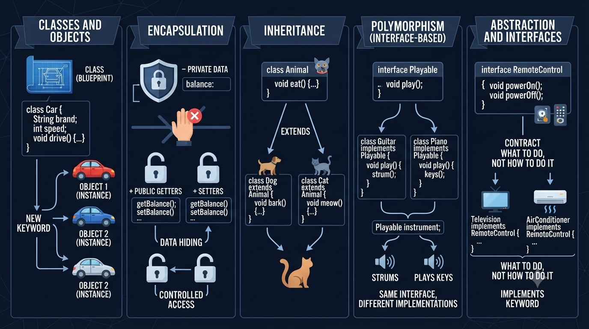
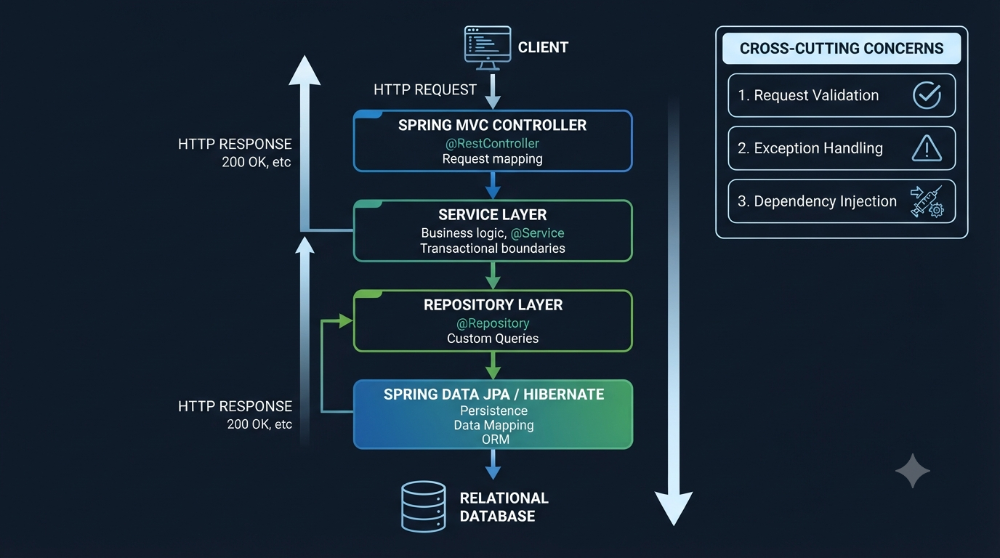
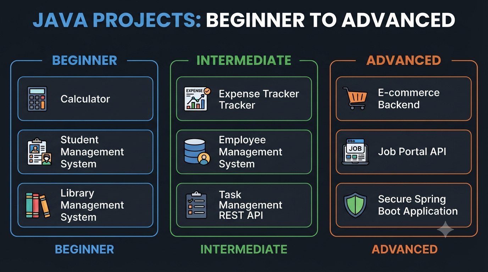
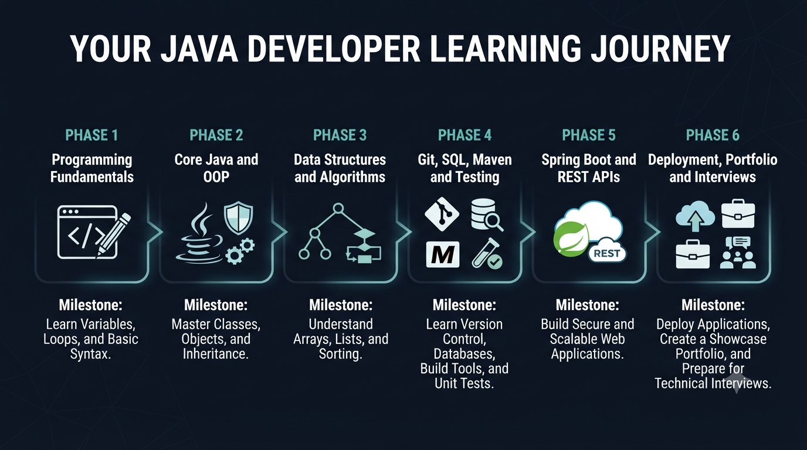

1. Introduction: What Does a Java Developer Do?
A Java developer designs, builds, tests, and maintains software using the Java programming language and its ecosystem. Depending on the role, that software might be a backend service, a business application, an internal tool, an Android-related component, or a large system that communicates with databases and other services.
For a beginner targeting backend development, a typical task might be to build an API that lets a user create an account, submit an order, or retrieve information. The Java application validates the request, applies business rules, reads or writes database records, and returns a response to the client. Frameworks such as Spring help organise this work, but they do not replace the need to understand Java itself.
Why learn Java?
- Strong language foundations: Java gives you practice with types, classes, interfaces, exceptions, collections, and object-oriented design.
- A broad ecosystem: The JDK, build tools, testing libraries, database drivers, and frameworks support many kinds of application development.
- Backend development: Java with Spring Boot is a common way to build web applications and REST services.
- Transferable concepts: Understanding memory, data structures, APIs, testing, and software design helps beyond Java.
This roadmap is suitable for B.Tech and B.E. students, self-learners, and fresh graduates. You do not need to know another programming language first. If you already know Python, C, or JavaScript, you may move faster through basic programming concepts, but you should still practise Java syntax and its type system rather than assuming the languages behave identically.
Important: This guide focuses mainly on the path to an entry-level Java backend role. Android development, desktop Java, and specialised enterprise topics have different additional requirements.
2. Java Developer Roadmap at a Glance
Follow the stages in order. You can overlap DSA practice with Core Java and continue improving your Git, SQL, and testing skills while building projects. The sequence below is a learning guide, not a rigid rule that every employer or project follows.
| Stage | What to learn | Practical checkpoint |
|---|---|---|
| 1. Programming basics | Variables, conditions, loops, methods, arrays | Write small programs without copying solutions |
| 2. Core Java | OOP, exceptions, collections, generics, I/O, streams | Build a structured console application |
| 3. DSA | Complexity, arrays, lists, stacks, queues, trees, graphs | Solve common problems and explain trade-offs |
| 4. Tools | JDK, IDE, Git, Maven, debugging, JUnit | Build and test a project from the command line |
| 5. Databases | SQL, relational design, JDBC, transactions | Persist application data in a database |
| 6. Web basics | HTTP, JSON, REST, status codes | Explain a request-response cycle |
| 7. Spring backend | Spring Boot, MVC, JPA, validation, security basics | Build a documented REST API |
| 8. Quality | Unit/integration tests, Mockito, logging, clean code | Test normal and failure scenarios |
| 9. Delivery | Linux, packaging, Docker, deployment, CI/CD basics | Run and demonstrate a deployed application |
Do not interpret this as nine separate courses that must be completed perfectly before you write a project. Build small applications throughout the roadmap. Each new stage should improve an existing project or help you create a more capable one.

3. Stage 1 — Programming Fundamentals
If you are new to programming, start by learning how to express a problem as a sequence of instructions. Do not rush into Spring Boot or copy a large project before you can write and debug a small program independently.
Topics to learn
- Basic programming concepts: input, output, statements, expressions, algorithms, and how a program executes.
-
Variables and data types: local variables,
primitive types such as
int,double,char, andboolean, reference types, and type conversion. - Operators: arithmetic, comparison, logical, assignment, and increment/decrement operators.
-
Conditional statements:
if,else if,else, andswitch. -
Loops:
for, enhancedfor,while, anddo-while; understand loop conditions and termination. - Methods: parameters, return values, method calls, scope, and breaking a problem into smaller tasks.
- Arrays: declaration, indexing, traversal, updating values, and basic two-dimensional arrays.
- Problem-solving: trace code by hand, identify edge cases, and turn a problem statement into steps before coding.
Practice exercises
Write programs to check whether a number is even, find the largest of three numbers, calculate a factorial, reverse a number, test for a palindrome, count vowels in a string, find the maximum array element, and calculate the average of a set of marks. Try variations instead of memorising one solution.
Checkpoint: when can you move on?
You should be able to write a small program from a plain-English requirement, choose appropriate variables, use conditions and loops, create methods, work with arrays, and explain your logic. You should also be able to find a syntax error and trace a simple program without relying on an AI-generated answer.
4. Stage 2 — Core Java
Core Java is the foundation of the roadmap. Learn the language and standard library before depending on a framework. A Spring application is still Java code; understanding objects, collections, exceptions, and types makes framework behaviour much easier to reason about.
4.1 Foundational Core Java topics
- Classes and objects: define a class as a blueprint and create objects with their own state and behaviour.
- Constructors: initialise objects and understand constructor overloading and constructor chaining.
- Encapsulation: protect an object's state and expose controlled operations through methods.
- Inheritance: understand how a class can extend another class, and when composition is a better design choice.
- Polymorphism: use a parent type or interface to work with different implementations; understand overloading and overriding.
- Abstraction and interfaces: define what an object can do without exposing every implementation detail.
-
Packages and access modifiers: organise classes
and control visibility with
public,protected, package-private, andprivate. -
Strings: work with
String, immutability, common methods, andStringBuilderfor repeated modifications. -
Exception handling: use
try,catch,finally,throw, andthrows; distinguish checked and unchecked exceptions. -
Collections Framework: use
List,Set,Queue, andMap, with common implementations such asArrayList,HashSet,ArrayDeque, andHashMap. - Generics: create type-safe reusable classes and methods, and understand generic types in collection APIs.
- Input/output and file handling: read and write text files, understand paths, and use try-with-resources to close resources safely.
4.2 Topics to learn after the basics
- Lambda expressions: represent small pieces of behaviour, commonly when working with functional interfaces.
-
Stream API: process collections using operations
such as
filter,map, andcollect. Learn readable sequential streams before parallel streams. - Basic multithreading: understand processes versus threads, thread creation, shared state, race conditions, synchronisation, and executors at an introductory level.
-
Enums, records, and date/time API: use enums for
fixed sets of values, records for suitable data carriers, and
java.timetypes for dates and times.
You do not need to master every advanced JVM feature at this stage. Reflection, custom class loaders, deep concurrency internals, garbage-collector tuning, and the Java module system can wait until a project or role gives you a reason to study them.
A small example: using a class and an object
public class Student {
private final String name;
private final int rollNumber;
public Student(String name, int rollNumber) {
this.name = name;
this.rollNumber = rollNumber;
}
public String getName() {
return name;
}
public int getRollNumber() {
return rollNumber;
}
}
Student student = new Student("Anaya", 101);
System.out.println(student.getName());
The class defines the structure and behaviour;
student is an object created from it. The fields are
private, and callers read them through methods. This is a small
example of encapsulation, not a complete application design.

Checkpoint: when can you move on?
Build a console application with multiple classes, validate input,
store records in collections, handle expected errors, and read or
write a file. You should be able to explain why you chose a
List, Set, or Map and
describe the difference between an interface and a class.
5. Stage 3 — Data Structures and Algorithms
Data structures organise information; algorithms describe how to process it. DSA helps you write efficient code and reason about trade-offs. It is also a common part of technical screening, although the depth expected varies by company and role.
Topics in a sensible order
- Time and space complexity: understand Big-O notation and compare constant, logarithmic, linear, linearithmic, and quadratic growth at an intuitive level.
- Arrays and strings: traversal, two pointers, sliding windows, prefix sums, and common search patterns.
- Searching and sorting: linear search, binary search on sorted data, and the ideas behind common sorting algorithms.
- Recursion: base cases, recursive calls, call stack, and simple backtracking exercises.
- Linked lists: nodes, traversal, insertion, deletion, reversal, and cycle detection.
-
Stacks and queues: LIFO/FIFO behaviour, common
use cases, and Java implementations such as
ArrayDeque. - Hashing: hash maps and sets, frequency counting, duplicate detection, and the idea of collisions.
- Trees: binary trees, binary search trees, traversals, and basic height/depth concepts.
- Graphs: vertices, edges, adjacency lists, breadth-first search, and depth-first search at an introductory level.
How to practise DSA in Java
- Use Java for every solution so you become comfortable with arrays, collections, methods, and class structure.
- Before coding, write down the input, expected output, constraints, and edge cases.
- First solve a problem with a straightforward approach. Then consider whether a better data structure or algorithm improves it.
- After solving, state the time and space complexity and explain why it applies.
- Revisit problems you could not solve independently after a few days; do not measure progress only by the number of submissions.
How much DSA is enough for entry-level preparation? Aim to understand the common structures and patterns above and solve easy problems independently, then build confidence with selected medium-level problems. You do not need to master every advanced graph algorithm or competitive-programming technique before applying for internships. Check the expectations of the roles you target.
Checkpoint
You can select a suitable structure for a problem, solve common array/string/hash-map problems, implement basic stacks and queues, use binary search, explain Big-O for your solution, and discuss at least one alternative approach.
6. Stage 4 — Development Tools
Professional development involves more than writing code in an editor. Learn the tools that help you compile, run, organise, review, test, and debug a project.
| Tool or concept | What it does | What to practise |
|---|---|---|
| JDK | Provides the compiler, runtime, standard libraries, and developer tools. |
Install a JDK, check java --version and
javac --version, compile and run a small
program.
|
| JVM | Executes Java bytecode and manages runtime services such as memory and garbage collection. | Understand source code → bytecode → JVM at a high level. |
| IntelliJ IDEA or VS Code | Provides editing, navigation, code completion, run configurations, and debugging. | Choose one IDE/editor and learn breakpoints, watches, and project navigation. |
| Git and GitHub | Git tracks versions locally; GitHub hosts repositories and supports collaboration. | Commit small changes, create branches, push a repository, and write a README. |
| Maven or Gradle | Automates dependency management, compilation, tests, and packaging. | Use one build tool first. Maven is a straightforward starting point for many beginner Spring projects. |
| Command line | Runs Java tools and build commands without relying only on IDE buttons. | Navigate folders, run programs, execute build commands, and inspect errors. |
| JUnit | Tests application behaviour automatically. | Write tests for normal inputs, invalid inputs, and edge cases. |
Which IDE should you choose?
IntelliJ IDEA is a Java-focused IDE with strong navigation, refactoring, and debugging support. VS Code can also be used for Java with the appropriate extensions. Pick one and learn it properly; switching editors repeatedly is not a learning milestone.
Maven or Gradle?
Both are valid build tools. Maven uses a convention-driven project
model and a pom.xml file. Gradle uses build scripts and
offers flexible configuration. Learn one well enough to add
dependencies, run tests, build a JAR, and understand the project
structure. You can learn the other when a team or project requires
it.
Checkpoint
Create a Java project with a build file, commit it to Git, run it from the command line, set a breakpoint in the debugger, and execute a basic automated test.
7. Stage 5 — SQL and Databases
Most backend applications need to store information after a program stops running. A relational database organises data into tables and provides SQL for querying and changing it. Java developers should understand how application objects relate to database records.
Database topics to learn
- Database fundamentals: tables, rows, columns, schemas, data types, constraints, and relationships.
-
SQL basics:
SELECT,INSERT,UPDATE,DELETE, filtering withWHERE, ordering, and aggregation. - Joins: understand inner and outer joins and how related records are retrieved across tables.
- Keys: use primary keys to identify rows and foreign keys to express relationships.
- Normalization basics: reduce avoidable duplication and understand why data is separated into related tables.
- Transactions: understand commit, rollback, and the idea of keeping a group of database operations consistent.
- Indexes: learn what an index helps with and why indexes also have storage and write costs.
Choose MySQL or PostgreSQL for practice. You do not need to learn both simultaneously. PostgreSQL's official tutorial is a useful introduction to relational concepts, table creation, querying, joins, aggregates, updates, and transactions.
Connect Java to a database with JDBC
JDBC (Java Database Connectivity) is the standard Java API for connecting to a relational data source, sending SQL statements, and processing results. Learn the basic flow: obtain a connection, create a prepared statement, bind parameters, execute the query, process the result, and close resources. Use prepared statements for values supplied by users; do not build SQL by concatenating raw user input.
String sql = "SELECT name FROM students WHERE roll_number = ?";
try (PreparedStatement statement = connection.prepareStatement(sql)) {
statement.setInt(1, 101);
try (ResultSet results = statement.executeQuery()) {
while (results.next()) {
System.out.println(results.getString("name"));
}
}
}
This fragment assumes that connection is already
established. It demonstrates parameter binding and
try-with-resources; it is not a complete database setup example.
Checkpoint
Design a small relational schema, write queries with joins and aggregates, explain primary and foreign keys, and build a Java program that reads and writes records using JDBC. Understand what a transaction protects.
8. Stage 6 — Web Development Fundamentals
Before building a backend API, understand how a browser, mobile app, or other client communicates with a server. These concepts are useful even if you never write frontend code.
- Client-server architecture: a client sends a request; a server processes it and returns a response.
- HTTP and HTTPS: understand requests, responses, headers, bodies, URLs, and the role of TLS in HTTPS.
-
HTTP methods: commonly used methods include
GETto retrieve,POSTto submit or create,PUTto replace,PATCHto partially update, andDELETEto remove a resource. Actual API semantics should be documented. - Status codes: recognise broad groups such as 2xx success, 3xx redirection, 4xx client errors, and 5xx server errors. Know common examples such as 200, 201, 204, 400, 401, 403, 404, and 500.
- JSON: understand objects, arrays, strings, numbers, booleans, and null. JSON is a common format for API request and response bodies.
- REST concepts: model resources, use resource-oriented URLs, select HTTP methods carefully, and return meaningful status codes.
- Authentication basics: distinguish authentication (who the user is) from authorisation (what the user may do). Learn sessions, tokens, and the need to protect credentials.
For example, a task API might expose GET /api/tasks to
list tasks and POST /api/tasks to create one. The
client sends JSON; the server validates it, applies business rules,
saves the data, and returns a response. Spring Boot will help
implement this flow, but HTTP knowledge helps you design and debug
it.
Checkpoint
Use an API client to send a request to a public test API or your own simple service. Explain the method, URL, headers, body, status code, and response. Know why a 401 response differs from a 403 response.
9. Stage 7 — Backend Development with Spring
Spring is a Java framework ecosystem for building applications. Spring Boot makes it easier to create stand-alone, production-oriented Spring applications with sensible defaults. Start with one small REST API and learn the framework through the code you write.
9.1 Learn these Spring concepts first
- Inversion of Control (IoC): application objects do not need to create and manage every dependency themselves; the Spring container manages configured objects, called beans.
- Dependency Injection (DI): dependencies are provided to a component, commonly through its constructor. Prefer constructor injection for required dependencies because it makes them explicit and supports easier testing.
- Spring Boot basics: project setup, starters, auto-configuration, application properties, profiles, and running the application.
- Spring MVC: understand controllers, request mapping, request parameters, path variables, request bodies, and response handling.
- REST API development: create endpoints for resources and return suitable response codes and data.
- Validation: validate incoming data and return useful client errors when required fields or values are invalid.
- Exception handling: handle expected errors consistently rather than exposing internal stack traces to API clients.

9.2 Persistence with Spring Data JPA and Hibernate
JPA is a Java specification for object-relational mapping. Hibernate is a widely used implementation of JPA. Spring Data JPA provides repository abstractions that reduce repetitive data-access code. Learn how entities map to tables, how repository methods work, and how relationships and transactions are handled.
Do not treat JPA as a replacement for understanding SQL. You still need to understand the queries being executed, how relationships are mapped, and how to avoid inefficient data access. Learn basic SQL first, then use JPA to work with entities.
9.3 Spring Security fundamentals
After you can build and test an unauthenticated API, learn the basics of Spring Security: authentication, authorisation, password hashing, security filters, and protecting routes. Add a simple, well-understood authentication flow to a project. Token-based authentication, OAuth 2.0, OpenID Connect, and fine-grained access control can be studied in more depth later.
What beginners should postpone
Do not begin with distributed tracing, reactive programming, complex microservice architectures, custom security filters, or advanced cloud-native configuration. These topics can be valuable, but they make more sense after you understand a single well-structured application.
Checkpoint
Build a Spring Boot REST API with controller, service, and repository layers; connect it to a relational database; validate requests; handle errors; and explain how dependencies are injected. Document the endpoints and test them with an API client.
10. Stage 8 — Testing and Code Quality
Working code is not automatically reliable code. Tests help you check behaviour when the application changes, while clean structure makes it easier for another developer to understand and maintain your work.
- Unit testing with JUnit: test a small unit of behaviour with clear arrange, act, and assert steps. Cover expected results, invalid inputs, and edge cases.
- Mockito fundamentals: create mocks for dependencies when a unit test should isolate the class being tested. Avoid mocking every object or testing implementation details instead of behaviour.
- Integration testing: test whether components work together, such as a controller, service, repository, and database configuration.
- Logging: record useful application events and errors with appropriate levels. Avoid logging passwords, access tokens, or sensitive personal data.
- Debugging: reproduce a problem, inspect inputs and state, read stack traces, and fix the underlying cause rather than hiding the exception.
- Clean code: use meaningful names, small cohesive methods, clear responsibilities, and avoid unnecessary duplication.
- SOLID principles: learn the ideas—single responsibility, open/closed, Liskov substitution, interface segregation, and dependency inversion—as design guidelines, not rules to apply mechanically.
A practical starting point is to write unit tests for service-layer business rules, then add integration tests for important API and database flows. A project does not need hundreds of tests to demonstrate good practice; it needs relevant tests that prove its important behaviour.
Checkpoint
Your project has repeatable tests, handles common failure cases, uses useful logs, and separates responsibilities. You can explain what each important test protects against.
11. Stage 9 — Deployment and Advanced Skills
Deployment means making an application available outside your development machine. Learn the basics after you have a working application, a database connection, and tests.
Essential delivery skills
- Build and packaging: use Maven or Gradle to run tests and package an application as a JAR. Understand what the build output contains.
- Linux basics: navigate directories, inspect files, manage processes, view logs, and understand permissions. Practise commands in a safe environment.
- Environment variables and configuration: keep environment-specific settings outside source code. Never commit passwords, API keys, or database credentials.
- Docker fundamentals: understand images, containers, ports, volumes, and a simple Dockerfile. Learn to run your application and database in containers for local development.
- Cloud deployment basics: understand application hosting, managed databases, environment configuration, logs, and basic networking. Choose one platform to practise rather than trying every cloud provider.
- CI/CD introduction: understand how a pipeline can build a project, run tests, and prepare or deploy an artefact after changes are pushed.
Advanced topics — useful later, not mandatory at the beginning
- Microservices: learn service boundaries, independent deployment, service-to-service communication, and the operational complexity of distributed systems. Do not split a small beginner application into microservices just to add a buzzword.
- Messaging systems: explore message brokers and asynchronous communication when a project needs background processing or event-driven workflows.
- Container orchestration: Kubernetes becomes relevant when you need to manage containerised applications across a cluster; it is not a prerequisite for your first Spring Boot API.
- Observability: learn metrics, logs, traces, health checks, and alerting as your applications become more complex.
- Performance and JVM tuning: study profiling, memory behaviour, garbage collection, and performance testing when you have a measurable problem to solve.
Checkpoint: package your application, configure it without hard-coded secrets, run it in a repeatable environment, and provide a working demonstration or deployment instructions. A simple reliable deployment is more useful than a complicated stack you cannot explain.
12. Java Projects to Build Along the Roadmap
Projects turn concepts into evidence. Build fewer projects with clear requirements, working features, tests, and documentation rather than creating many unfinished repositories. The progression below deliberately changes the engineering problem as you advance.
Beginner projects
1. Calculator
Skills: variables, operators, methods, conditionals, input validation, and exception handling.
Suggested stack: Core Java console application; optionally add a simple GUI later.
Core features: addition, subtraction, multiplication, division, repeated calculations, and handling invalid input or division by zero.
Portfolio value: a small first exercise that demonstrates clean methods and edge-case handling. It is not a standout portfolio project on its own, so use it as practice rather than your main showcase.
2. Student Management System
Skills: OOP, collections, CRUD operations, searching, sorting, and validation.
Suggested stack: Core Java, collections, and optional file storage.
Core features: add, view, search, update, and remove student records; prevent duplicate IDs; validate marks and required fields.
Portfolio value: demonstrates that you can model entities and organise a multi-class application. Include a clear data model and sample usage.
3. Library Management System
Skills: OOP, collections, SQL, JDBC, relationships, and transaction basics.
Suggested stack: Java, JDBC, and MySQL or PostgreSQL.
Core features: maintain a book catalogue, register members, issue and return books, track due dates, and prevent a book from being issued when unavailable.
Portfolio value: introduces related entities and business rules, rather than only storing a flat list of records.
Intermediate projects
4. Personal Expense Tracker
Skills: date/time API, collections, file or database persistence, aggregation, and reporting.
Suggested stack: Core Java first; then JDBC with a relational database. A small UI is optional.
Core features: record income and expenses, categorise transactions, filter by date range, calculate monthly totals, and export a report.
Portfolio value: shows data processing and useful summaries. Add validation for amounts and dates, and explain how totals are calculated.
5. Employee Management System with a Database
Skills: relational schema design, SQL joins, JDBC, prepared statements, transactions, and validation.
Suggested stack: Java, JDBC, MySQL or PostgreSQL, Maven, and JUnit.
Core features: maintain employees and departments, assign employees to departments, search and filter records, and produce department-level summaries.
Portfolio value: demonstrates relational modelling and safe database access. Include schema diagrams and example queries.
6. Task Management REST API
Skills: Spring Boot, REST, HTTP, validation, service-layer design, and API testing.
Suggested stack: Java, Spring Boot, Maven, and an API client. Begin with in-memory storage, then add a database.
Core features: create tasks, set priorities and due dates, change status, filter tasks, and validate incoming requests.
Portfolio value: demonstrates that you understand request/response design and can build a small backend service with clear endpoints.
Advanced portfolio projects
7. E-commerce Backend
Skills: domain modelling, Spring Boot, JPA, transactions, authentication, authorisation, and testing.
Suggested stack: Java, Spring Boot, Spring Data JPA, PostgreSQL or MySQL, Spring Security, and Docker.
Core features: product catalogue, inventory, shopping cart, order placement, order status, and role-based administration. Use a payment sandbox only if you can integrate it safely; do not store card details.
Portfolio value: demonstrates multiple related workflows and consistency requirements. Explain how stock updates and order creation are handled.
8. Job Portal API
Skills: API design, relational relationships, search/filtering, pagination, security, and file-handling concepts.
Suggested stack: Java, Spring Boot, Spring Data JPA, SQL database, and Spring Security.
Core features: employer and candidate accounts, job listings, search filters, applications, application status, and access rules so users can only manage permitted records.
Portfolio value: demonstrates role-based workflows and relationships between users, jobs, and applications. Include API documentation and sample requests.
9. Secure Spring Boot Application with Authentication
Skills: Spring Security, password hashing, authentication, authorisation, validation, persistence, and integration testing.
Suggested stack: Java, Spring Boot, Spring Security, Spring Data JPA, SQL database, JUnit, and Mockito.
Core features: registration, login, protected endpoints, role-based access, profile management, and consistent error responses. Use established security mechanisms rather than inventing your own password or token scheme.
Portfolio value: provides a focused demonstration of security concepts. Document the threat assumptions and explain what each access rule protects.
Project selection advice: You do not need all nine projects. A strong portfolio can contain one well-finished Core Java project, one database-backed application, and one Spring Boot API with tests and documentation. Choose projects you can explain line by line.

For more Java project ideas and scope examples, see 10 Java Projects for Students.
13. GitHub Portfolio and Resume Preparation
Your GitHub profile should make it easy for someone to understand what you built, how to run it, and what you learned. A repository with a meaningful README and a working project is more useful than a collection of empty repositories.
Organise each repository
- Use a clear repository name and a one-sentence description.
- Keep source code, tests, configuration examples, and documentation in predictable folders.
-
Use
.gitignoreto exclude build output, IDE-specific files when appropriate, local configuration, and secrets. - Make small commits with messages that describe the change.
- Do not upload passwords, API keys, database dumps containing personal information, or generated files that do not belong in the repository.
Write a useful README
For each portfolio project, include:
- What the application does and which problem it addresses.
- Main features and the technology stack.
- Prerequisites and step-by-step setup instructions.
- How to configure environment variables without exposing real secrets.
- How to run the application and execute tests.
- API endpoint examples or a link to generated API documentation.
- Screenshots, a short demo, known limitations, and possible future improvements.
Prepare a beginner-friendly developer resume
- Keep the resume readable and tailored to the role. Put relevant Java, SQL, Spring, Git, and testing skills where they are easy to find.
- Describe projects with action, implementation, and outcome: what you built, which technologies you used, and what functionality works.
- Link directly to the strongest repositories or demos.
- List coursework or certifications only when they are relevant and accurately represented.
- Do not claim expertise in a tool because you followed one tutorial. Be ready to explain every skill you list.
A useful project bullet might read: “Built a Spring Boot task API with CRUD endpoints, request validation, PostgreSQL persistence, and JUnit tests; documented setup and sample requests in the README.” Adapt it to what you actually implemented—never copy a claim that is not true of your project.
14. Java Developer Interview Preparation
Prepare to explain concepts and apply them, not just recite definitions. Interview formats differ, so use job descriptions and internship requirements to decide where to spend extra time.
| Area | Questions and skills to practise |
|---|---|
| Core Java |
Primitive vs reference types; == vs
equals(); String immutability; constructors;
access modifiers; interfaces; overloading vs overriding.
|
| OOP | Explain encapsulation, inheritance, polymorphism, and abstraction with examples from a project. When would you prefer composition? |
| Collections | When would you use List, Set, or Map? Compare ArrayList and LinkedList at a practical level. How does a HashMap work conceptually? |
| Exceptions | Checked vs unchecked exceptions; try-with-resources; when to create a custom exception; how to avoid swallowing errors. |
| DSA | Array/string problems, hash maps, stacks, queues, binary search, recursion, tree traversals, and complexity analysis. |
| SQL | Joins, grouping, keys, normalization basics, indexes, transactions, and writing queries from a requirement. |
| Web and REST | HTTP methods, status codes, JSON, REST resource design, authentication vs authorisation, and request validation. |
| Spring Boot | IoC and DI, beans, controller/service/repository responsibilities, JPA, validation, exception handling, and configuration. |
| Testing | Unit vs integration tests, JUnit assertions, when to use Mockito, and how to test failure scenarios. |
| Projects | Explain architecture, database design, difficult bugs, trade-offs, testing, security decisions, and what you would improve next. |
Use a repeatable interview routine
- Review one Core Java or OOP topic and explain it aloud in your own words.
- Solve one DSA problem and state its complexity.
- Write or review one SQL query.
- Explain one API endpoint from your project, including validation and error handling.
- Practise a two-minute walkthrough of a project, then answer follow-up questions about design choices.
15. A Realistic Learning Timeline for College Students
There is no universal number of months that guarantees job readiness. Your starting point, weekly study time, problem-solving experience, and project complexity all affect progress. Use the phases below as planning blocks, not deadlines. A student learning alongside college might spend several weeks or longer in each phase and revisit earlier topics as projects become more demanding.
| Phase | Focus | Practical outcome | Move forward when… |
|---|---|---|---|
| Phase 1 | Programming fundamentals | Small console exercises and a calculator | You can write methods, loops, conditions, and array programs independently. |
| Phase 2 | Core Java and OOP | Student or library console application | You can organise classes, use collections, handle exceptions, and persist simple data. |
| Phase 3 | DSA alongside Java | A steady set of solved problems with notes | You can solve common easy problems and explain complexity and edge cases. |
| Phase 4 | Git, Maven, debugging, testing, SQL | Database-backed application with automated tests | You can build from the command line, use Git, query a database, and test key behaviour. |
| Phase 5 | HTTP, REST, Spring Boot | Documented task or employee REST API | You can explain the request lifecycle and implement persistence, validation, and error handling. |
| Phase 6 | Security, deployment, portfolio, interviews | One polished, demonstrated backend project | You can run and explain the project, discuss design choices, and solve role-appropriate interview problems. |

A sustainable weekly routine
If you are studying alongside classes, consistency matters more than attempting very long sessions. One practical pattern is to divide available study time between Java learning, DSA practice, and project work. For example, on a study day you might spend one focused block on a new concept and another shorter block implementing or revising it. Reserve a weekly session to review mistakes, update your GitHub repository, and plan the next small milestone.
- Learn: study one topic from a trusted resource and write short notes in your own words.
- Practise: solve exercises without immediately checking the answer.
- Build: add one working feature to a project.
- Review: test the feature, commit the change, and record what you found difficult.
When exams or college deadlines become heavy, reduce the size of your daily target instead of abandoning the roadmap entirely. A small amount of deliberate practice is easier to resume than an unrealistic schedule.
16. Recommended Learning Resources
Start with official documentation for language and framework behaviour. Use practice platforms for repetition, but return to documentation when you need to understand how an API actually works. These resources are selected for their direct relevance; some official reference pages assume you already know the basics.
Java and Core Java
- Dev.java — Learn Java: official learning material covering first steps, language basics, object-oriented programming, collections, streams, and other JDK topics.
- Java SE 25 API Documentation: reference documentation for standard Java classes and APIs.
- OpenJDK builds: information and builds from the OpenJDK project.
- Oracle Java downloads: JDK downloads and release information. Review the applicable licence terms for the distribution you choose.
DSA practice
- LeetCode problem set: practise coding problems and filter by topic and difficulty. Use Java as your selected language.
- HackerRank Java practice: Java-focused exercises for syntax and language concepts.
- GeeksforGeeks data structures: topic explanations and practice material; cross-check language details with official documentation.
Git and GitHub
- Pro Git book: a detailed free book covering version control, branches, remotes, and collaboration.
- GitHub Docs — Getting started with Git: a beginner-oriented introduction to using Git with GitHub.
SQL and JDBC
- PostgreSQL tutorial: practical introduction to relational databases, SQL, joins, aggregates, updates, and transactions.
- MySQL tutorial: introductory material for working with MySQL.
- JDBC tutorial: useful for JDBC concepts and examples. Oracle notes that this older tutorial targets JDK 8, so use it for JDBC fundamentals and consult current JDK documentation for modern Java language features.
Spring, testing, and build tools
- Spring Boot reference documentation: application setup, configuration, web development, data access, testing, and deployment topics.
- Spring Framework reference: core concepts including IoC and dependency injection.
- JUnit user guide: writing and running automated tests.
- Mockito: documentation and examples for creating test doubles.
- Maven getting-started guide: project structure, dependencies, tests, and packaging.
- Docker getting started: beginner guidance for images, containers, and running applications.
Which Java version should a beginner install in 2027?
Java releases arrive on a regular feature-release schedule, and not every release is an LTS release. As of this article's November 17, 2026 review, Java 25 is the latest LTS release, while Java 27 is the latest feature release and is non-LTS. For a beginner building a learning environment and portfolio, Java 25 LTS is a sensible default because it offers a longer support horizon than a short-term feature release. If a course, employer, or framework project specifies another supported JDK, follow that project's requirements. See the Oracle Java SE support roadmap for LTS and support information.
Java 21 is also an LTS release and remains relevant in existing projects. Do not assume that every company has moved to the newest JDK. Before choosing a version for a project, check the framework's compatibility requirements and the runtime available in the target environment.
For the Spring Boot version used in a new project, consult its official system requirements rather than copying a version number from an old tutorial. The current Spring Boot 4.1 documentation lists Java 17 as its minimum and supports newer JDK releases, including Java 25. Dependencies and third-party integrations may have their own requirements.
17. Common Mistakes Beginners Should Avoid
- Jumping into Spring Boot too early: learn classes, collections, exceptions, and basic SQL first.
- Watching tutorials without building: pause after each concept and implement a small variation without following the video.
- Ignoring DSA completely: practise common structures and patterns gradually rather than leaving all problem-solving until interview season.
- Learning too many tools at once: choose one IDE, one build tool, and one relational database initially.
- Copying projects: if you cannot explain a class, endpoint, or query, simplify the project and rebuild that part.
- Skipping SQL: ORM tools do not remove the need to understand tables, joins, transactions, and query behaviour.
- Ignoring tests and errors: test invalid input and failure cases, not only the happy path.
- Adding advanced technologies for appearance: use Docker, microservices, or messaging when they solve a real problem you can explain.
- Hard-coding secrets: keep credentials out of source control and configure applications safely.
- Waiting for perfection before applying: once you have sound fundamentals and a project you can explain, begin exploring internships and entry-level opportunities while continuing to learn.
18. Frequently Asked Questions
How long does it take to become a Java developer?
There is no fixed duration. It depends on your programming background, weekly study time, consistency, and the depth of projects you build. A student learning alongside college may need multiple study phases to become comfortable with Java, DSA, databases, Spring Boot, testing, and interviews. Use the checkpoints in this roadmap to measure progress rather than relying on a guaranteed month count.
Can a beginner learn Java without knowing another programming language?
Yes. You can start with variables, data types, conditions, loops, methods, and arrays in Java. You do not need to learn C or Python first. Beginners should spend extra time practising problem-solving and reading compiler errors.
Is DSA necessary for Java developers?
DSA is useful for writing efficient programs and is commonly assessed in many software-development interviews. The expected depth varies by role and employer. Learn the core data structures, common algorithms, complexity analysis, and practise problems in Java; advanced competitive programming is not a universal prerequisite.
Should I learn Spring Boot after Core Java?
Yes, once you can use OOP, collections, exceptions, generics, and basic file handling, and you understand the purpose of a build tool and tests. Learn SQL and HTTP fundamentals before or alongside your first Spring Boot API. You do not need to master every Java feature before starting a small backend project.
Is SQL necessary for Java backend developers?
For most roles involving relational data, SQL is an important skill. Learn querying, joins, keys, constraints, transactions, and basic database design. Spring Data JPA can simplify data access, but it does not replace SQL knowledge.
How many Java projects should I build?
There is no ideal number. Aim for a small set of finished projects that demonstrate increasing capability: one Core Java application, one database-backed project, and one well-tested Spring Boot API is a useful starting portfolio. Quality, documentation, and your ability to explain the design matter more than the count.
Is Java still worth learning in 2027?
Java remains an actively maintained language with ongoing JDK releases and a mature ecosystem. Whether it is the right choice for you depends on the kinds of roles and applications you want to build. If you are interested in backend development and enterprise-style applications, Java and Spring are a practical path to explore. Check current role requirements in your target location rather than assuming one language guarantees a job.
Should I learn Java 25 or Java 27?
For most beginners, Java 25 LTS is a sensible default in November 2026. Java 27 is a newer non-LTS feature release. Use the JDK version required by your course or project when it differs, and check the current support and framework compatibility information before upgrading.
Do I need to learn microservices before applying for an entry-level role?
No. First learn how to build and test a well-structured single application. Microservices introduce distributed-system concerns and are best studied after you understand APIs, databases, deployment, and application boundaries.
19. Conclusion: Follow the Sequence, Then Build
A practical Java developer roadmap is not a race to collect framework names. Start with programming fundamentals, become comfortable with Core Java, practise DSA, learn Git and a build tool, understand SQL and HTTP, and then build backend applications with Spring Boot. Add tests, documentation, and a straightforward deployment so other people can run and review your work.
Choose one project that matches your current stage and improve it as you learn. A small, complete application that you understand is a stronger foundation than a large copied project filled with technologies you cannot explain.
Your next step: if you are starting from zero, write a few Java console programs today. If you already know Core Java, build a database-backed project and begin learning HTTP and Spring Boot. Keep your progress visible in GitHub and review your roadmap every few weeks.